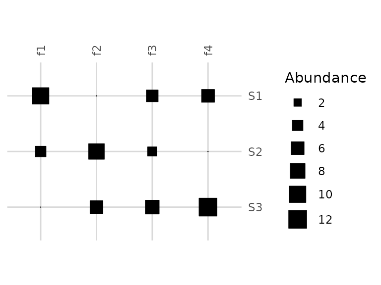
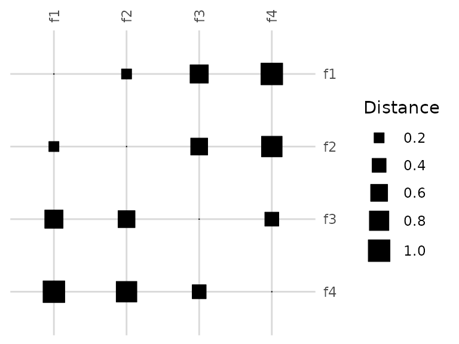
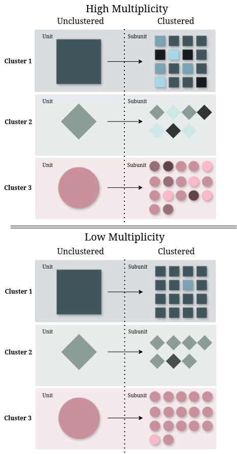
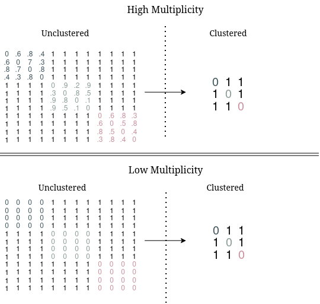
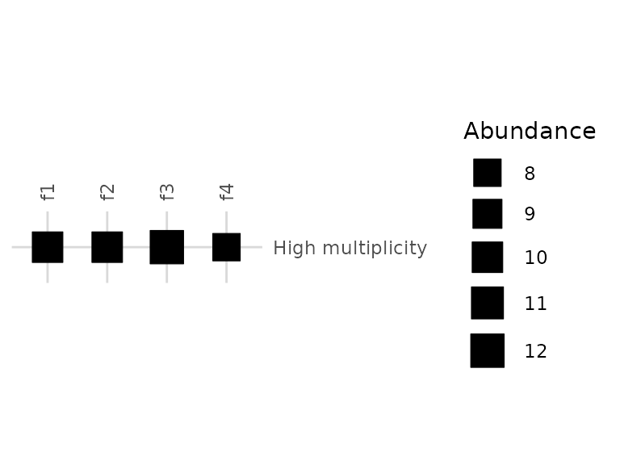
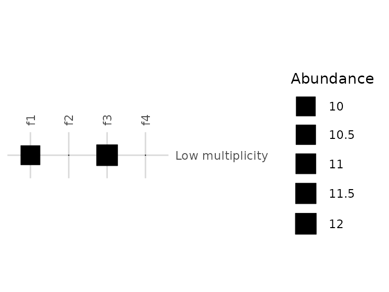
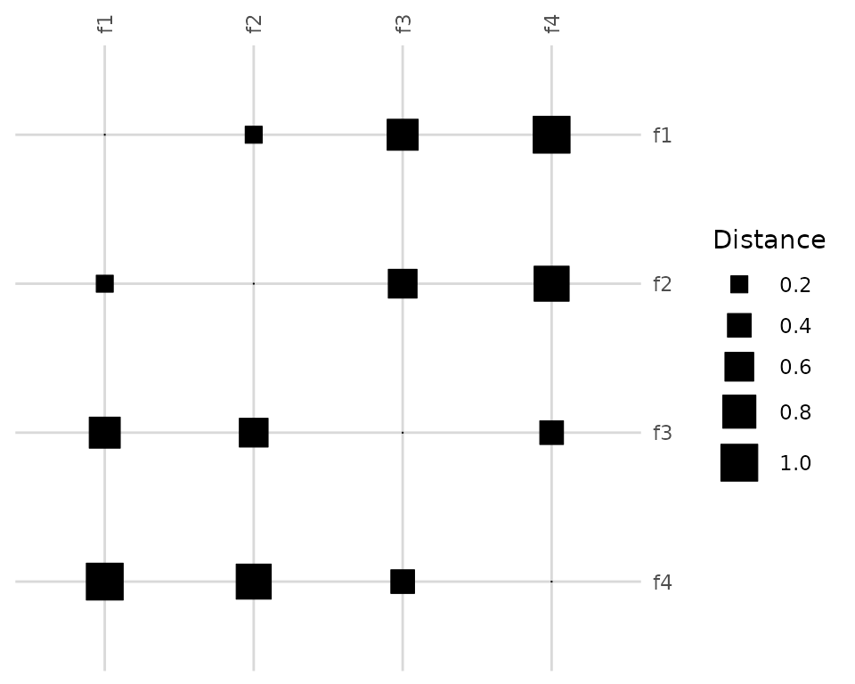

Introduction to divermeta
Felipe González-Casabianca, Vladimir Mikryukov
2026-11-09
Source:vignettes/divermeta.Rmd
divermeta.RmdIntroduction
divermeta computes multiplicity, the metric that
quantifies within‑cluster diversity that is typically neglected when
elements are grouped into units (e.g., genes into homolog groups, ASVs
into OTUs, etc.).
The core function of the package is divermeta(), which
computes multiple indices across all samples at once. You may request
the following indices via indices argument:
- inventory multiplicity:
"multiplicity_inventory" - distance‑based multiplicity (σ‑capped):
"multiplicity_distance" - optional companions:
"raoQ","FD_sigma","FD_q","redundancy" - averages over the clusters: relative multiplicity
"relative_multiplicity"and average redundancy"average_redundancy" - proportional abundance of the units:
"proportional_abundance"(needsclust, notdiss)
Additionally, the package provides
metagenomic.alpha.index() (MAD) as a standalone function
for computing the Metagenomic Alpha-Diversity Index (see below).
This vignette uses tiny synthetic data to keep runtime short and outputs deterministic.
Installation
You can install the development version of divermeta from GitHub with:
# install.packages("remotes")
remotes::install_github("Mycology-Microbiology-Center/divermeta")Load the package:
Quick start
We create a small samples x features abundance table, a cluster membership vector named by feature, and a table of pairwise feature dissimilarities in the 0-1 range (one row per pair of features).
# Samples (rows) and features (columns)
features <- c("f1", "f2", "f3", "f4")
samples <- c("S1", "S2", "S3")
abund <- matrix(
c(
10, 0, 5, 6, # S1
4, 9, 3, 0, # S2
0, 6, 7, 12 # S3
),
nrow = length(samples), byrow = TRUE,
dimnames = list(samples, features)
)
# Clusters per feature (named by the column names of abund)
clust <- c(f1 = "A", f2 = "A", f3 = "B", f4 = "B")
# Optional dissimilarities among features (0-1): id_1, id_2, distance
diss <- data.frame(
ID1 = c("f1", "f1", "f1", "f2", "f2", "f3"),
ID2 = c("f2", "f3", "f4", "f3", "f4", "f4"),
Distance = c(0.2, 0.7, 1.0, 0.6, 0.9, 0.4)
)
# One call computes multiple indices across all samples
res <- divermeta(
abund,
clust = clust,
diss = diss,
q = 1,
sig = 0.8,
indices = c("multiplicity_inventory", "multiplicity_distance", "raoQ", "redundancy"))
res
#> Sample multiplicity_inventory multiplicity_distance raoQ redundancy
#> 1 S1 1.434634 1.157068 0.4852608 0.1496599
#> 2 S2 1.651211 1.112500 0.2484375 0.3375000
#> 3 S3 1.648991 1.268371 0.3955200 0.2380800Columns correspond to requested indices; rows correspond to samples.
Inventory multiplicity reflects the average within‑cluster diversity;
distance‑based multiplicity reflects average within‑cluster functional
or phylogenetic diversity with distances capped at a threshold sigma
(σ).
You can visualize the input data structures side-by-side (the
plotting functions take the same abund and
diss as the indices):
visualize_abundance(abund, csize = 0.7, clegend = 0.4)
visualize_dist(diss, csize = 0.7, clegend = 0.4)

The left plot shows the abundance matrix (samples x features), where tile size represents abundance magnitude. The right plot shows the distance matrix (pairwise distances between features), where tile size represents distance magnitude. Features f1-f2 belong to cluster A, and f3-f4 belong to cluster B. Notice how within-cluster distances (f1-f2, f3-f4) are smaller than between-cluster distances.
About multiplicity index
The multiplicity index is a diversity index designed specifically for metagenomic data, but that can be applied to other types of ecological data. In the context of clustering subunits (like strains, variants, or protein sequences) into their corresponding units (species, gene families, or homologous groups), multiplicity measures both the average intra-cluster diversity across all units and the diversity sacrificed by the chosen clustering scheme. After clustering and working directly with the obtained units, the underlying composition and diversity of each unit is masked by the clustering scheme. This index serves as a tool to distinguish if the resulting units have a single representative subunit inside of them or instead, are composed of several distinct subunits that cluster together into the unit. The following image gives a graphical representation of this scenario
knitr::include_graphics("multiplicity-chart.png")
There are two versions of the index, a distance agnostic version (inventory multiplicity) and one that incorporated the notion of similarity / distance between the subunits into it’s calculation (distance-based multiplicity). The case for low and hight distance-based multiplicity is graphically represented in the following figure using distance matrices among subunits (unclustered) and units (clustered)
knitr::include_graphics("multiplicity-matrix-chart.png")
For more details, please refer to the accompanying publication.
Here we illustrate the multiplicity index concept using two samples with the same cluster structure:
- High: multiple subunits per cluster (higher within‑cluster diversity)
- Low: only one representative per cluster (lower within‑cluster diversity)
# Reuse `features` and `clust` from above
# f1 and f3 are the representatives of clusters A and B; f2 and f4 are
# additional subunits present only in High
abund_concept <- matrix(
c(
10, 10, 12, 8, # High
10, 0, 12, 0 # Low
),
nrow = 2, byrow = TRUE,
dimnames = list(c("High","Low"), features) )
concept_res <- divermeta(
abund_concept,
clust = clust,
indices = "multiplicity_inventory",
q = 1)
concept_res
#> Sample multiplicity_inventory
#> 1 High 1.979966
#> 2 Low 1.000000As expected, High shows a larger multiplicity value than
Low, since each cluster contains more distinct
subunits.
Visualizing the abundance matrices side-by-side helps illustrate the difference:
visualize_abundance(abund_concept["High", , drop = FALSE],
sample.labels = "High multiplicity",
csize = 0.8, clegend = 0.5)
visualize_abundance(abund_concept["Low", , drop = FALSE],
sample.labels = "Low multiplicity",
csize = 0.8, clegend = 0.5)

In the High scenario (left), both clusters (A: f1+f2, B: f3+f4) contain multiple distinct features with non-zero abundances, resulting in higher multiplicity. In the Low scenario (right), each cluster effectively contains only one feature (f2 and f4 have zero abundance), resulting in lower multiplicity. The tile size represents abundance magnitude.
Inventory multiplicity
res_q0 <- divermeta(
abund,
clust = clust,
indices = "multiplicity_inventory",
q = 0)
res_q1 <- divermeta(
abund,
clust = clust,
indices = "multiplicity_inventory",
q = 1)
res_q2 <- divermeta(
abund,
clust = clust,
indices = "multiplicity_inventory",
q = 2)
cbind(
Sample = res_q1$Sample,
M_q0 = res_q0$multiplicity_inventory,
M_q1 = res_q1$multiplicity_inventory,
M_q2 = res_q2$multiplicity_inventory)
#> Sample M_q0 M_q1 M_q2
#> [1,] "S1" "1.5" "1.43463376571196" "1.37267080745342"
#> [2,] "S2" "1.5" "1.65121096664765" "1.67924528301887"
#> [3,] "S3" "1.5" "1.64899100795382" "1.73362445414847"q controls abundance weighting (0 richness‑like, 1
Shannon‑type, 2 Simpson‑type). Higher q down‑weights rare
subunits.
Distance‑based multiplicity
Distance‑based multiplicity requires a dissimilarity table. Use
sig to cap pairwise distances and define when two subunits
are considered distinct.
The distance structure is key to understanding distance-based multiplicity. Here’s the distance matrix from our example:
visualize_dist(diss, csize = 0.8, clegend = 0.5)
Notice how features within the same cluster (f1-f2 in cluster A, f3-f4 in cluster B) have smaller distances (smaller squares) compared to distances between clusters. Distance-based multiplicity quantifies the diversity within clusters while accounting for these functional/phylogenetic similarities.
res_sig08 <- divermeta(
abund,
clust = clust,
diss = diss,
indices = "multiplicity_distance",
sig = 0.8)
res_sig10 <- divermeta(
abund,
clust = clust,
diss = diss,
indices = "multiplicity_distance",
sig = 1.0)
merge(res_sig08, res_sig10, by = "Sample", suffixes = c("_sig0.8","_sig1.0"))
#> Sample multiplicity_distance_sig0.8 multiplicity_distance_sig1.0
#> 1 S1 1.157068 1.121827
#> 2 S2 1.112500 1.088020
#> 3 S3 1.268371 1.203760Smaller sig trims large distances, making subunits more
similar and lowering functional/phylogenetic diversity; this typically
increases distance‑based multiplicity (less diversity lost to
clustering, relatively more within‑cluster similarity accounted
for).
Metagenomic Alpha-Diversity Index (MAD)
The Metagenomic Alpha-Diversity Index (MAD) is another metric for
measuring within-cluster diversity. Unlike multiplicity indices, MAD
does not incorporate element abundances and decreases as cluster size
increases. It is available as a standalone function
metagenomic.alpha.index(), computed for every sample over
the features present in it:
# Compute MAD
# Note: MAD uses the abundances only to know which features are present in
# every sample; by default the first present feature of a cluster is its representative
mad_value <- metagenomic.alpha.index(
abund = abund,
diss = diss,
clust = clust
)
mad_value
#> S1 S2 S3
#> 0.7333333 0.7000000 0.7333333Note: Unlike multiplicity, MAD does not account for element abundances and behaves differently as cluster size increases. See the manuscript for a detailed comparison between MAD and multiplicity indices.
Large distance files
The number of pairs grows with the square of the number of features:
100 000 features give about 5·10⁹ pairs, far more than fits in memory.
Every function that uses distances therefore also accepts
diss as the path to a file with the
three-column table. The file is read in chunks of
chunk_size rows (default 1e6), so memory
depends on the number of samples, features and clusters and on
chunk_size, not on the number of pairs.
divermeta() computes all the requested indices from a
single read of the file.
The file is delimited text with the two feature identifiers and the distance in its first three columns:
-
.csvfiles are comma separated and.tsvfiles tab separated; for other extensions the separator (tab, comma or white space) is detected from the first line; - the first line is expected to be a header
(
header = TRUE, the default); for files without a header, setheader = FALSE. A first line that looks like data while a header is expected is an error, so no row is dropped silently; - files may be compressed with gzip (
.gz), bzip2 (.bz2), xz (.xz) or zstd (.zst, which needs thezstdcommand line tool).
We write the distances of the quick start to a compressed file and compute the same indices from it:
diss_file <- tempfile(fileext = ".tsv.gz")
con <- gzfile(diss_file, "w")
write.table(diss, con, sep = "\t", quote = FALSE, row.names = FALSE)
close(con)
res_file <- divermeta(
abund,
clust = clust,
diss = diss_file,
q = 1,
sig = 0.8,
indices = c("multiplicity_inventory", "multiplicity_distance", "raoQ", "redundancy"),
chunk_size = 2,
check_large_distance_file = TRUE)
all.equal(res, res_file)
#> [1] TRUE(chunk_size = 2 only shows that the file is read in
several chunks; real files use the default or larger.)
Every pair exactly once
Pairs read from a file are not kept in memory, so they cannot be
de-duplicated as an in-memory table is: the file must list every
pair of features the index needs exactly once, in either
orientation. Rows with identifiers that are not columns of
abund, and self pairs, are ignored. Features with zero
abundance in every sample need no distances: if some of their pairs are
missing, the functions warn and compute the indices without them.
While reading, the functions always check that the distances are
finite, non-negative numbers, and they compare the number of rows with
the number of pairs, stopping if there are too few or too many. What the
row count cannot see is a missing pair and a duplicated one cancelling
out. A missing pair counts as distance 0 (as if the two features were
identical) and a duplicated pair counts twice, so the result would be
wrong without any error. This is why, with the default
check_large_distance_file = FALSE, the functions warn that
the file was not checked:
raoQuadratic(abund, diss_file)
#> Warning: The distance file was not checked (`check_large_distance_file =
#> FALSE`): every needed pair of subunits is assumed to be listed exactly once.
#> Only the number of rows is compared with the number of pairs; a missing pair
#> would count as distance 0 and a duplicated one twice. Use
#> `check_large_distance_file = TRUE` or `check_distance_file()` to verify the
#> file.
#> S1 S2 S3
#> 0.4852608 0.2484375 0.3955200With check_large_distance_file = TRUE (as in the call
above) the file is first checked by check_distance_file(),
which finds every missing, duplicated, conflicting or invalid row and
stops the index if there is any. The check does not load the file into
memory either: it splits the pairs by their first feature into temporary
files on disk, reads the file one more time, and needs about 16 bytes of
temporary disk space per pair.
check_distance_file() can also be run on its own, for
instance once before computing several indices from the same file. Here
we drop one pair and list another twice, so the number of rows is still
right:
bad_file <- tempfile(fileext = ".csv")
write.csv(rbind(diss[-2, ], diss[5, ]), bad_file, row.names = FALSE)
check_distance_file(bad_file, ids = colnames(abund))
#> Distance file check (every pair of subunits): FAILED
#> Rows read: 6
#> Pairs needed: 6
#> Rows used: 6
#> Rows ignored: 0
#> Invalid distances: 0
#> Missing pairs: 1 (e.g. f1-f3)
#> Duplicated pairs: 1 (e.g. f2-f4)
#> Conflicting duplicates: 0scope sets which pairs are needed: "all"
(default) for raoQuadratic(),
diversity.functional(),
diversity.functional.traditional(),
redundancy() and multiplicity.distance() with
a linkage method; "within" (the pairs inside clusters,
which needs clust) for multiplicity.distance()
with method = "sigma",
relative.multiplicity(),
relative.multiplicity.ref_div() and
average.redundancy(); "between" (the pairs of
features of different clusters, which needs clust) for
unit_distances(). divermeta() needs
"all" when any of the requested indices does, and
"within" otherwise. Rows outside the scope are ignored, by
the check and by the indices, even when their distance is NA, infinite
or negative. For instance, the pairs inside clusters of the bad file are
fine:
check_distance_file(bad_file, ids = colnames(abund), clust = clust, scope = "within")
#> Distance file check (pairs of subunits of the same unit): OK
#> Rows read: 6
#> Pairs needed: 2
#> Rows used: 2
#> Rows ignored: 4
#> Invalid distances: 0
#> Missing pairs: 0
#> Duplicated pairs: 0
#> Conflicting duplicates: 0metagenomic.alpha.index() also reads files, but has no
check_large_distance_file argument: it only needs the pairs
between the representatives and the other features of their clusters,
and it always checks those exactly.
See ?"distance-files" and
?check_distance_file for the details.
Practical tips
- Ensure
clustis aligned tocolnames(abund); a named vector is the most robust. - Provide
dissas a three-column table (id_1, id_2, distance), scaled to 0-1. Every pair of features present in at least one sample must be listed (withmethod = "sigma", distance-based multiplicity only needs the pairs inside clusters, as relative multiplicity and average redundancy do); pairs with a feature that has zero abundance in every sample may be missing, with a warning.FD_sigmaand distance-based multiplicity cap distances atsig, andredundancycaps them at 1;raoQandFD_quse them as given. - For large studies, pass
dissas a file path and setcheck_large_distance_file = TRUE(or runcheck_distance_file()once) so that missing or duplicated pairs cannot silently change the results. - Choose
qto emphasize common vs. rare subunits in inventory multiplicity andFD_q.
Importing data from third‑party tools (TODO)
TODO - add recipes on importing outputs from common pipelines/tools
and preparing data for divermeta().
Session info
sessionInfo()
#> R version 4.6.2 (2026-10-29)
#> Platform: x86_64-pc-linux-gnu
#> Running under: Ubuntu 26.04.1 LTS
#>
#> Matrix products: default
#> BLAS: /usr/lib/x86_64-linux-gnu/openblas-pthread/libblas.so.3
#> LAPACK: /usr/lib/x86_64-linux-gnu/openblas-pthread/libopenblasp-r0.3.32.so; LAPACK version 3.12.0
#>
#> locale:
#> [1] LC_CTYPE=C.UTF-8 LC_NUMERIC=C LC_TIME=C.UTF-8
#> [4] LC_COLLATE=C.UTF-8 LC_MONETARY=C.UTF-8 LC_MESSAGES=C.UTF-8
#> [7] LC_PAPER=C.UTF-8 LC_NAME=C LC_ADDRESS=C
#> [10] LC_TELEPHONE=C LC_MEASUREMENT=C.UTF-8 LC_IDENTIFICATION=C
#>
#> time zone: UTC
#> tzcode source: system (glibc)
#>
#> attached base packages:
#> [1] stats graphics grDevices utils datasets methods base
#>
#> other attached packages:
#> [1] divermeta_0.0.6
#>
#> loaded via a namespace (and not attached):
#> [1] vctrs_0.7.3 cli_3.6.6 knitr_1.52 rlang_1.3.0
#> [5] xfun_0.62 otel_0.3.0 S7_0.2.2 textshaping_1.0.5
#> [9] jsonlite_2.0.0 glue_1.8.1 htmltools_0.5.9 ragg_1.5.2
#> [13] sass_0.4.10 scales_1.4.0 rmarkdown_2.32 grid_4.6.2
#> [17] evaluate_1.0.5 jquerylib_0.1.4 fastmap_1.2.0 yaml_2.3.12
#> [21] lifecycle_1.0.5 compiler_4.6.2 RColorBrewer_1.1-3 fs_2.1.0
#> [25] farver_2.1.2 systemfonts_1.3.2 lattice_0.23-1 digest_0.6.39
#> [29] R6_2.6.1 bslib_0.12.0 Matrix_1.7-6 withr_3.0.3
#> [33] gtable_0.3.6 tools_4.6.2 ggplot2_4.0.3 pkgdown_2.2.1
#> [37] cachem_1.1.0 desc_1.4.3